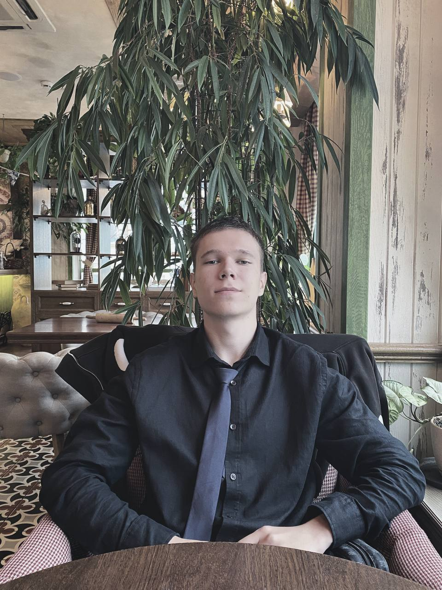

Это моя первая HTML страница
О себе
Имя: Воронцов Максим Денисович
Родился: 17 Мая 2005 года
Место проживания: Самара
Место обучение: Самарский университет
Хобби: Чтение книг, написание музыки, киберспорт, чечетка
Интересные факты: 2 года занимался футболом, но закончил из-за травмы плеча
Какие фильмы мне нравятся
- 1+1
- Побег из Шоушенка
- Бойцовский клуб
Какая музыка мне нравится
- Рок
- Реп
- Поп-музыка
Как связаться со мной
